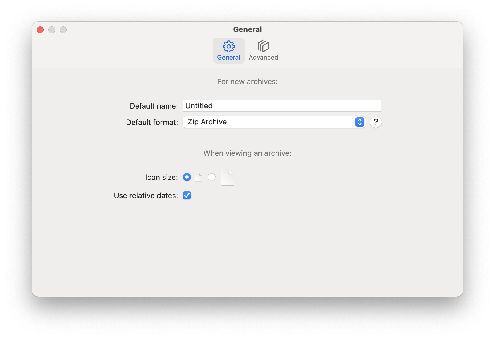
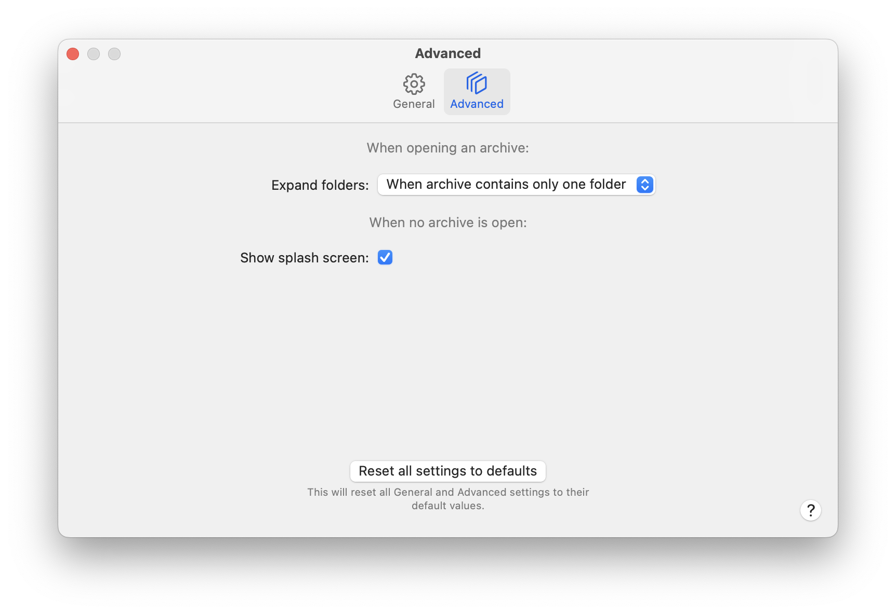

Arkyve offers two groups of settings, which you can learn more about below.
General Settings
The first settings in the General tab relate to new archives you create with Arkyve - what they should be named and which type of archive they should be.
The rest of the settings on this tab relate to how an archive's items should be displayed.

Advanced Settings
The first setting determines how Arkyve should behave when opening archives that contain folders, specifically, whether or not they should be expanded to show their contents.
The second setting controls whether or not Arkyve should show its Welcome window when no archive windows are open.
